Explore Kyoto
A Brief History
Kyoto, the imperial capital of Japan for over a millennium, is the undisputed cultural heart of the nation. It is a city where time seems to stand still among thousands of classical Buddhist temples, serene Zen gardens, and vivid Shinto shrines. Beyond its breathtaking UNESCO World Heritage sites, Kyoto offers the enchanting atmosphere of traditional geisha districts, perfectly preserved wooden machiya townhouses, and the seasonal beauty of cherry blossoms and autumn leaves. Exploring Kyoto is a profound journey into the absolute essence of traditional Japanese aesthetics and spirituality.
Attractions Map
Top Sights & Activities
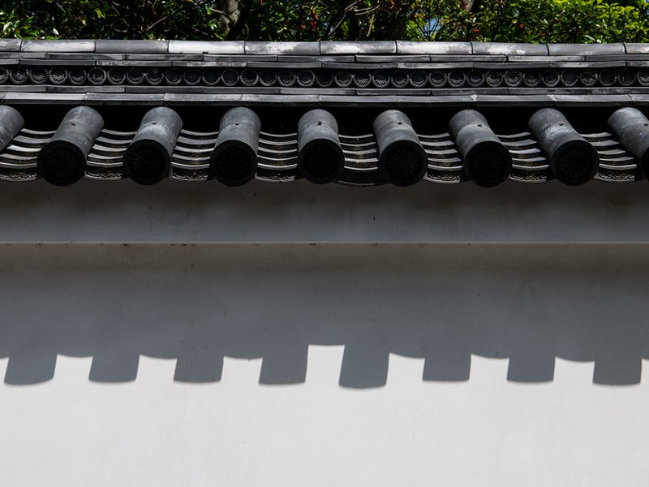
Kyoto Sento Imperial Palace
In Japan, the Sentō Imperial Palace traditionally does not refer to a single location, but to any residence of retired emperors. Before Emperor Akihito abdicated in 2019, the last Emperor to retire did so in 1817, so the designation commonly refers to the Kyoto Sentō Imperial Palace.
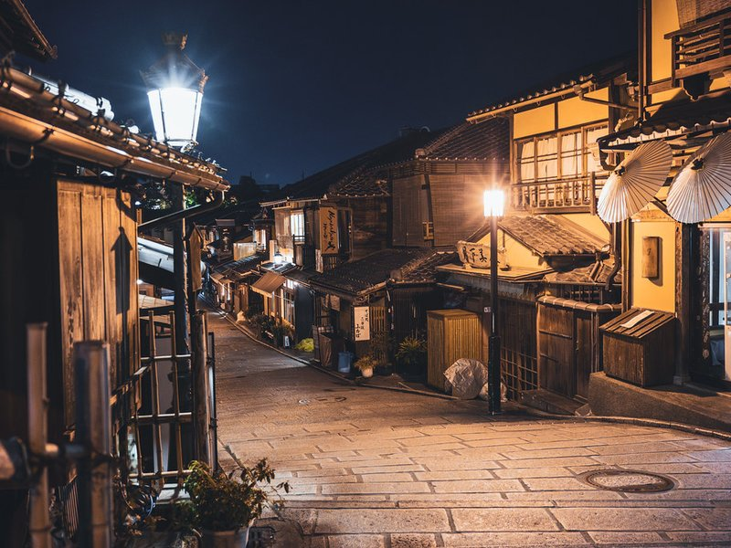
Ninenzaka
Ninenzaka, or Ninen-zaka is an ancient 150m stone-paved pedestrian road and tourist attraction in Higashiyama-ku, Kyoto, Japan. The road is lined with traditional buildings and shops, and is often paired with the similar road, Sannenzaka.
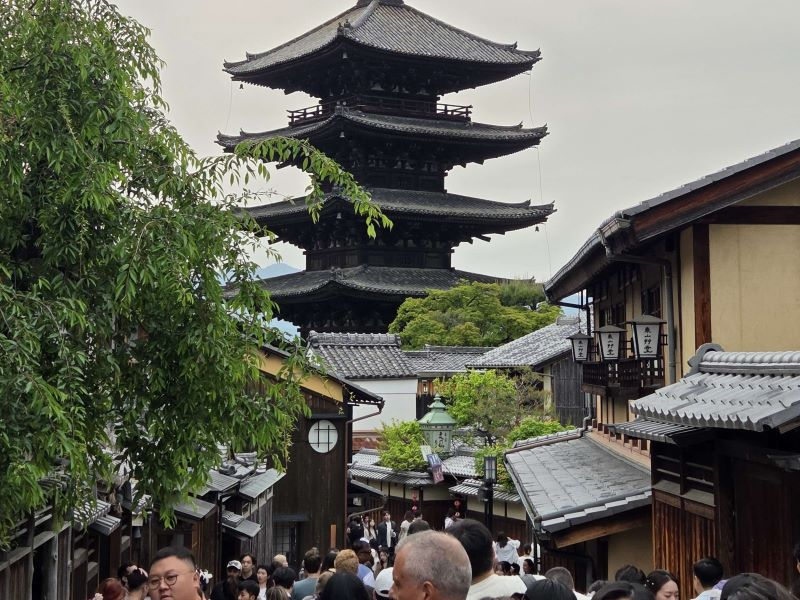
Sannenzaka
Sannenzaka, or Sannen-zaka, is a stone-paved pedestrian road and tourist attraction in Higashiyama-ku, Kyoto, Japan. The road is lined with traditional buildings and shops, and is often paired with the similar road, Ninenzaka. The two roads lead to Kiyomizu-dera Temple, Kodaiji Temple and Yasaka-jinjia Shrine, which are a few famous sights in Kyoto.
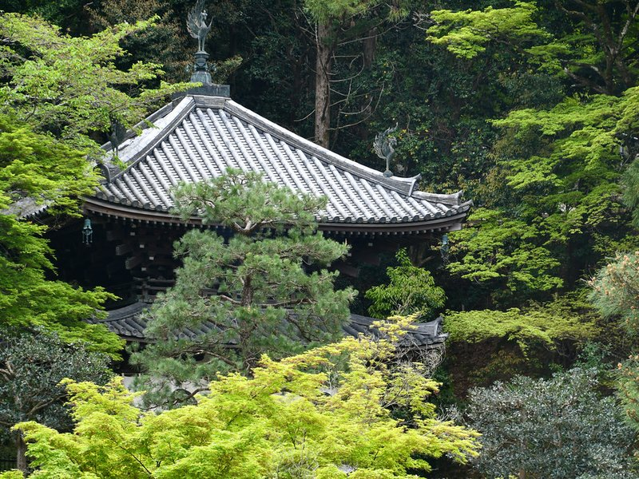
Chionin Temple
Chion-in in Higashiyama-ku, Kyoto, Japan is the headquarters of the Jōdo-shū founded by Hōnen, who proclaimed that sentient beings are reborn in Amida Buddha's Western Paradise by reciting the nembutsu, Amida Buddha's name. The vast compounds of Chion-in include the site where Hōnen settled to disseminate his teachings and the site where he died.
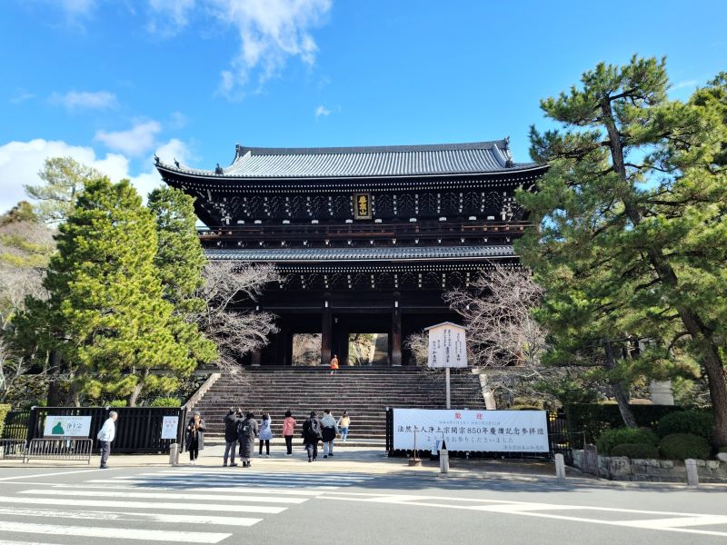
Chionin Sanmon Gate
Chion-in in Higashiyama-ku, Kyoto, Japan is the headquarters of the Jōdo-shū founded by Hōnen, who proclaimed that sentient beings are reborn in Amida Buddha's Western Paradise by reciting the nembutsu, Amida Buddha's name. The vast compounds of Chion-in include the site where Hōnen settled to disseminate his teachings and the site where he died.
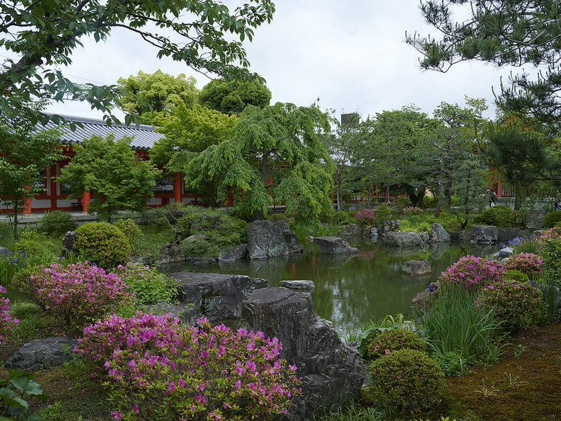
Maruyama Park
Maruyama Park is a park in Kyoto, Japan. It is noted as the main center for cherry blossom viewing in Kyoto, and can get extremely crowded at that time of year. The park's star attraction is a weeping cherry tree which becomes lit up at night.
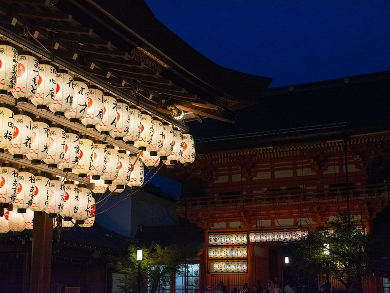
Yasaka Shrine
Yasaka Shrine, once called Gion Shrine, is a Shinto shrine in the Gion District of Kyoto, Japan. Situated at the east end of Shijō-dōri, the shrine includes several buildings, including gates, a main hall and a stage. The Yasaka shrine is dedicated to Susanoo in the tradition of the Gion faith as its chief kami, with his consort Kushinadahime on the east, and eight offspring deities on the west.
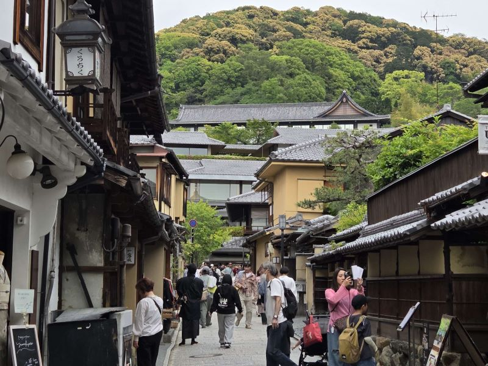
Nene-no-michi
Kōdai-in, formerly known as Nene, One, Nei, was an aristocrat and Buddhist nun, founder of the temple Kōdai-ji in Kyoto, Japan. She was formerly the principal samurai wife of Toyotomi Hideyoshi under the name of Toyotomi Yoshiko. When she rose in higher political status, she took the title of "Kita no mandokoro".
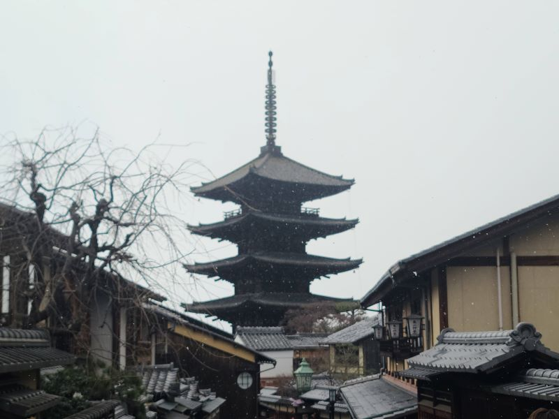
Hokan-ji Temple
The Yasaka Pagoda, also known as the Tower of Yasaka, is a Buddhist pagoda located in Higashiyama-ku, Kyoto, Japan. The 5-story tall pagoda is the last remaining structure of a 6th-century temple complex known as Hōkan-ji. It was founded by the Goguryeo clan that established in Japan, and is the oldest temple in Kyoto.
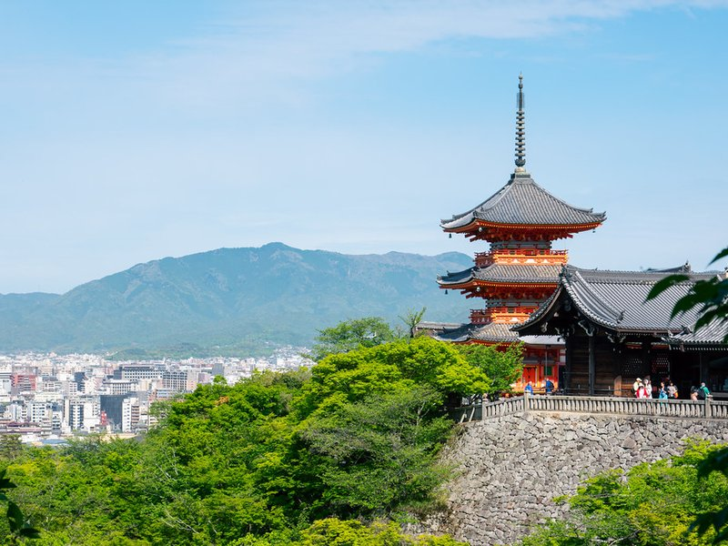
Kiyomizu-dera
Kiyomizu-dera is a Buddhist temple located in eastern Kyoto, Japan. It belongs to the Kita-Hosso sect of Japanese Buddhism and its honzon is a hibutsu statue of Jūichimen Kannon. The temple's full name is Otowa-san Kiyomizu-dera.
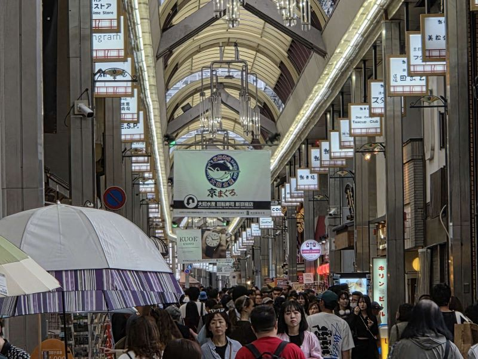
Kyoto Shinkyogoku Shopping Street
Shinkyōgoku Street is a shopping street that runs from north to south in the center of the city of Kyoto. The street extends for approximately 500 m from Sanjō Street on its northern end to Shijō Street on its southern end and it is located between Ura Teramachi Street and Teramachi Street.
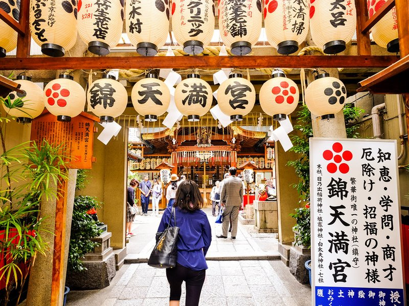
Nishiki Tenmangu Shrine
A wonderfully beloved, intensely historic Shinto shrine uniquely situated deep within a bustling modern shopping arcade. It incredibly famously enshrines the deeply revered ancient Japanese deity of learning and scholarship.
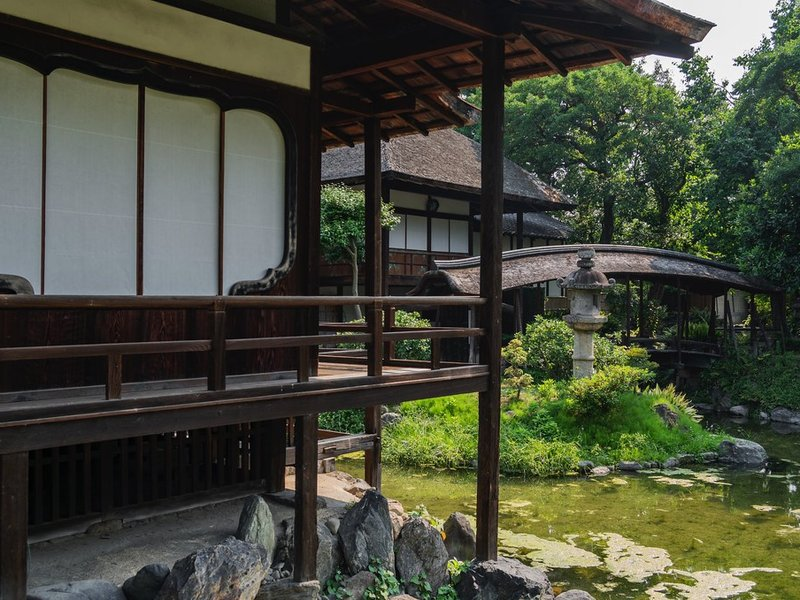
Nishi Honganji Temple
Nishi Hongan-ji is a Buddhist temple in Shimogyō-ku, Kyoto, Japan. It serves as the head temple of the Jodo Shinshu Hongwanji-ha subsect. It is one of two Jōdo Shinshū temple complexes in Kyoto, the other being Higashi Hongan-ji, which is the head temple of the Ōtani-ha subsect.
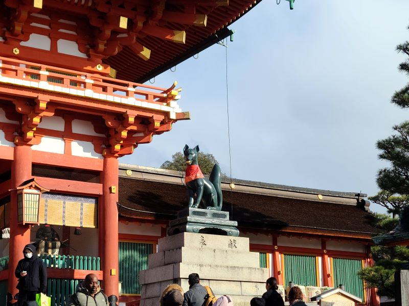
Fushimi Inari Taisha
Fushimi Inari-taisha is the head shrine of the kami Inari, located in Fushimi-ku, Kyoto, Japan. The shrine sits at the base of a mountain, also named Inari, which is 233 metres above sea level, and includes trails up the mountain to many smaller shrines which span 4 kilometres and take approximately 2 hours to walk up. It is unclear whether the mountain's name, Inariyama, or the shrine's name came first.
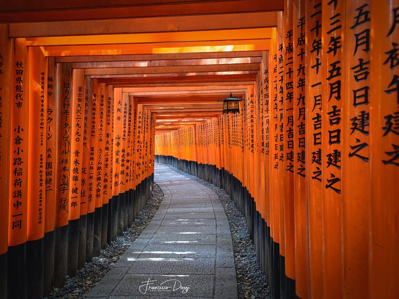
Senbon Torii
A torii is a traditional Japanese gate most commonly found at the entrance of or within a Shinto shrine, where it symbolically marks the transition from the mundane to the sacred, and a spot where kami are welcomed and thought to travel through. The presence of a torii at the entrance is usually the simplest way to identify Shinto shrines, and a small torii icon represents them on Japanese road maps and on Google Maps.
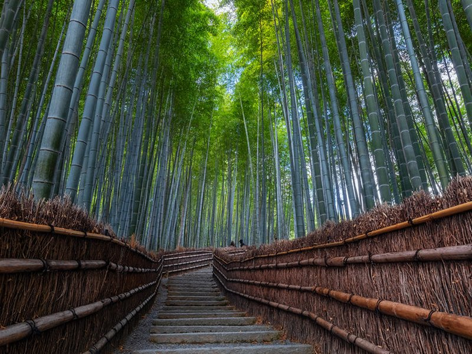
Arashiyama Bamboo Forest
The Bamboo Forest, Arashiyama Bamboo Grove, or Sagano Bamboo Forest is a natural bamboo forest in Arashiyama, Kyoto, Japan. It consists mostly of mōsō bamboo and has several pathways for tourists and visitors. The Ministry of the Environment considers it a part of the soundscape of Japan.